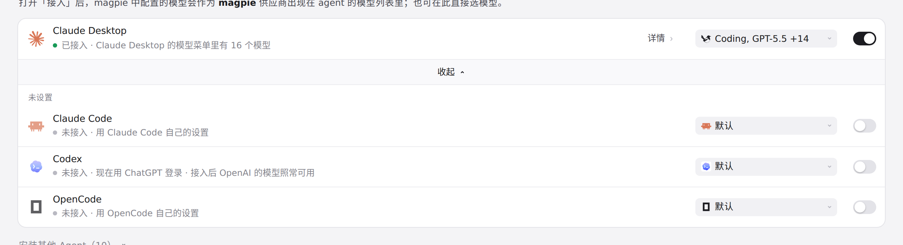

#1128 界面预览
commit 181880c · 回到 PR · 这个 PR 给 magpie 内置的 Agent 列表里新增了一个 Agent「Bub」（~/.bub/config.yml），它会像其他 Agent 一样出现在 Agents 页的已接入列表里，带 model（写成 magpie:<provider>/<model>）和 effort 两个可选字段，并配有 Bub 的图标。
红线是鼠标走过的轨迹，红色圆环是一次点击；底部文字是这一步在做什么。空格暂停，← → 逐段查看。

Agent 页：已接入列表与未安装 Agent 清单 · 展开后的 Agent 页列表
 Agent 页：已接入列表与未安装 Agent 清单 · 未安装 Agent 的清单
Agent 页：已接入列表与未安装 Agent 清单 · 未安装 Agent 的清单